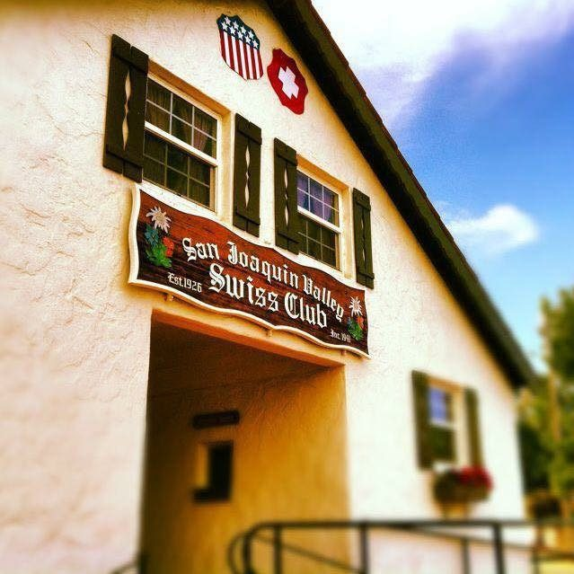
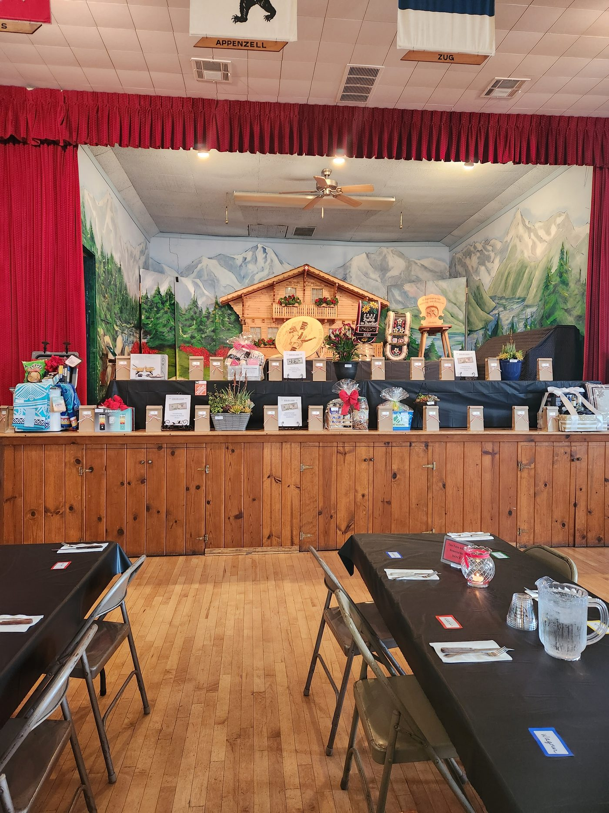

Home / Club history
Founded 1926Club history
The spirit of the fellowship, as expressed in the Swiss motto “one for all and all for one”, has been passed down from one generation to the next.
How it began
The first Swiss club in the San Joaquin Valley was formed in Stanislaus County in 1920, at Yori’s Grove in Modesto, California. It was a social gathering of the Swiss Italians and the Swiss Germans.
The Swiss German people were more active in sporting events such as schwinging — Swiss wrestling — and the tug-of-war contests. The tug-of-war was made up of two teams, the Swiss Germans on one side and the Swiss Italians on the other. The contests were taken very seriously, and it was reported that this competition contributed to the division of the two groups into the present separate clubs.
The Swiss German people formed the San Joaquin Valley Swiss Club in 1926. There were sixteen original charter members: Arnold Bucher and Joe Bucher of Ripon; Joe Bucher of Lathrop; John Bucher, Henry Engler, Arnold Kaiser, Werner Kaiser, Wendel Kiser Sr., Gus Kreuzer, Oscar Kuenzler, Adolph “Bill” Scheuber, Konrad Reichenbach, Bill Muller, Carl Ott Sr. and Joe Ott Sr. of Modesto; and Nick Frunz of Patterson, California.
Halls were rented from various other organisations in the vicinity for the dances, schwingfests, schutzenfests, card parties, theatre plays, and concerts by outside special Swiss entertainers. The constitution and bylaws are dated 19 June 1927.
Building the hall
In 1938, property was purchased in Ripon from three Swiss, namely Louie Blattler, Alfred Filliger and Albert Wagner. The membership had grown, and Ripon was the centre point of the community.
In 1939, lumber was available from the site of the World’s Fair at Treasure Island in San Francisco. Most of the lumber, trusses, doors, hardwood flooring and hardware were bought at a minimum price and hauled to Ripon by the Joe Petrig hay trucks in Tracy. The building committee consisted of Louie Blattler, Arnold Kaiser, Clements Ott Sr., Arnold Rothlin Sr., Joe Petrig, and the master carpenter, Louie Burch of Modesto. Construction of the dance hall and bar areas was put up by all volunteer work of the membership.
The hall was officially opened with a dedication ceremony in 1941. Carl Ott Sr. was the successful bidder for the key to open the doors to their new Swiss hall. To help finance the project, a ticket selling campaign was held. Three young ladies sold tickets — Ida Petrig-Williams, Germain Widmer-Imhof and Nita Kaiser-Wagner — and the one selling the most was to be Queen of the Swiss Hall. Nita Kaiser-Wagner was crowned at the grand opening ceremony.
In 1945, the wrestling arena was enlarged, moving from the east side of the hall to the south side. Again a contest was held, and tickets were sold by Agnes Inderbitzin-Fleutsch, EdaMae Kaiser-Betschart, Elsie Ott-Holdener, Erna Rothlin-Trinkler and Aileen Beeler-Kaiser to fund the grandstands project. Aileen Beeler-Kaiser was crowned for selling the most tickets.
The chorus
In 1947, the San Joaquin Valley Swiss Echoes was first organised under the direction of John Meyer. There were 28 charter members. The group became members of the United Swiss Singing Societies of the Pacific Coast in 1948 and participated in the Los Angeles Sängerfest.
The highlights of the Swiss Echoes were in hosting the first California Swiss Singing and Jodeling Festival in 1956, being hosts for the 10th Pacific Coast Swiss Singing and Jodeling Festival in 1960, the 16th in 1978, and the 24th in 2002.
Growing
In 1953, a dinner room was added to the dance hall. In 1956, an adjoining 1.1 acres of land was purchased, and in 1957 the caretaker’s house and garage was built.
In 1959, the Ripon Schwinger Club was formed and affiliated with the SJVSC. Two big events of the year are the Spring and Fall Schwingfests. There have been many schwingers from Switzerland who have competed in Ripon, as well as some of our schwingers going to Switzerland to compete at their schwingfests, bringing home beautiful prizes of Swiss bells, plaques and wood carving. The boys wrestle in age groups of 6–8, 9–11, 12–14, juniors 15–17, and seniors 18 and up. Many sawdust rings at individual homes were put in for the young and older boys to practise under the direction of some capable and faithful coaches.
In 1973, the outdoor stage was constructed to accommodate entertainers during the Schwingfests and Song and Jodelfests. In 1975, 3.91 acres were purchased to ensure more parking space around the club hall.
In 1985, the dining room was remodelled to add a new commercial kitchen, funded by the Chuchichäschtli Chochbuech committee. A schwinger shed was erected for the boys to use for practice. A wall along the west side of the property with tree planting and landscaping, plus a new memorial entrance, was completed. The tree planting was funded by individual donations in memory of the members’ loved ones.
In 2001, the Swiss Club decided to sell the northern section of bare land that lines Stouffer Street for residential lots to a developer. Due to citizens’ concerns about developing the entrance to the park, the City of Ripon stepped in and purchased the property. Funds from the sale are being used to remodel and update the hall facilities.


The anniversary book
- Published2016
- Marks75 years of the hall, 50 years of the club flag
- ContainsClub history, family immigrant biographies and family crests
- Price$25
- To orderriponswissclub@aol.com